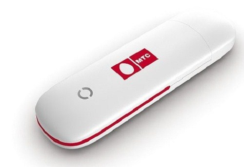

Автостопом по веб-платформе

Мария Кондаурова
BIOCAD
Дисклеймер
Чего не будет
- кода
- практикоприменимости
- паттернов и вот этого всего
Что будет
- много ностальгии
- немного схем
- ..и еще немного ностальгии
Что такое
веб-платформа?

Веб-платформа = Браузер + API + стандарты + тесты + комитеты
Но с чего всё началось?

Первый в мире комьютер ENIAC (1945 год)

| Параметр | ENIAC (1945) | iPhone 17 Pro (2025) |
|---|---|---|
| Операций в секунду |
≈5 000 сложений/сек ≈357 умножений/сек |
≥6 000 000 000 000 операций/сек |
| Память | 20 слов (10‑разрядные десятичные числа) | 6–8 ГБ ОЗУ, до 1 ТБ постоянной памяти |
| Потребление энергии | ≈174 кВт | ~10 Вт (пиковая нагрузка SoC) |
Интернет (World Wide Web)

Первый браузер в 1990 году создал Тим Бернерс-Ли.

Первый в мире сайт
Изначальная идея веба как гипертекстовой системы
для обмена знаниями

ПК —> Веб стал доступен каждому
Наступила эра «Невинного» веба
- Статичные HTML-страницы
- Документы, ссылки, немного картинок
- Табличная вёрстка

Люди стали генерировать контент и самовыражаться
Сайт — как пиар компания фильма (1996)

The million dollars homepage

Давайте поностальгируем :)
Вспомните как первый раз "зашли" в интернет
